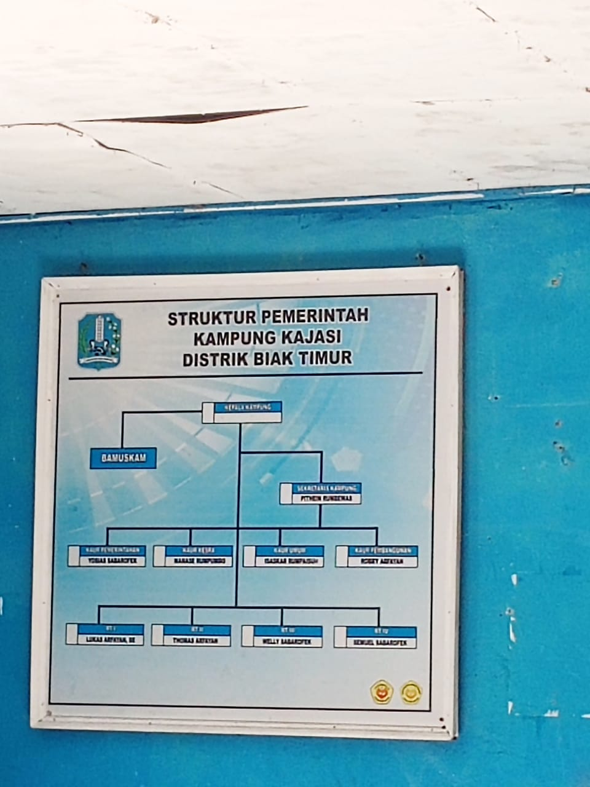
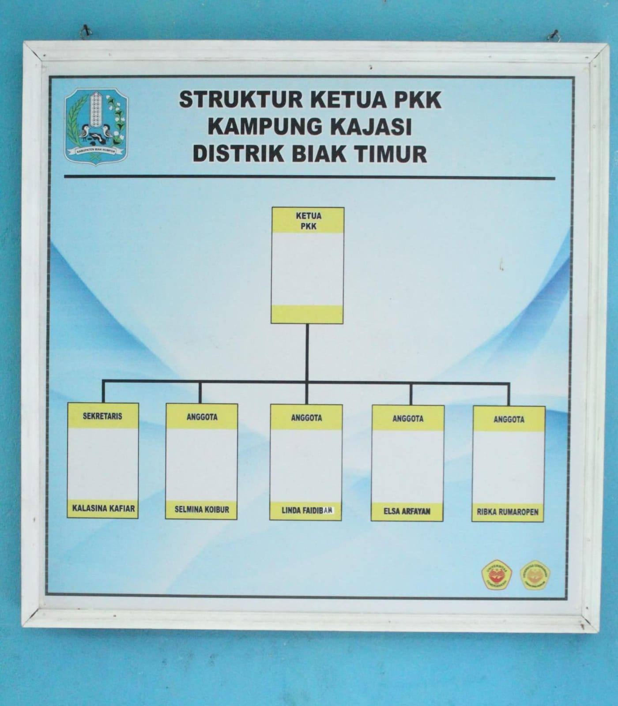
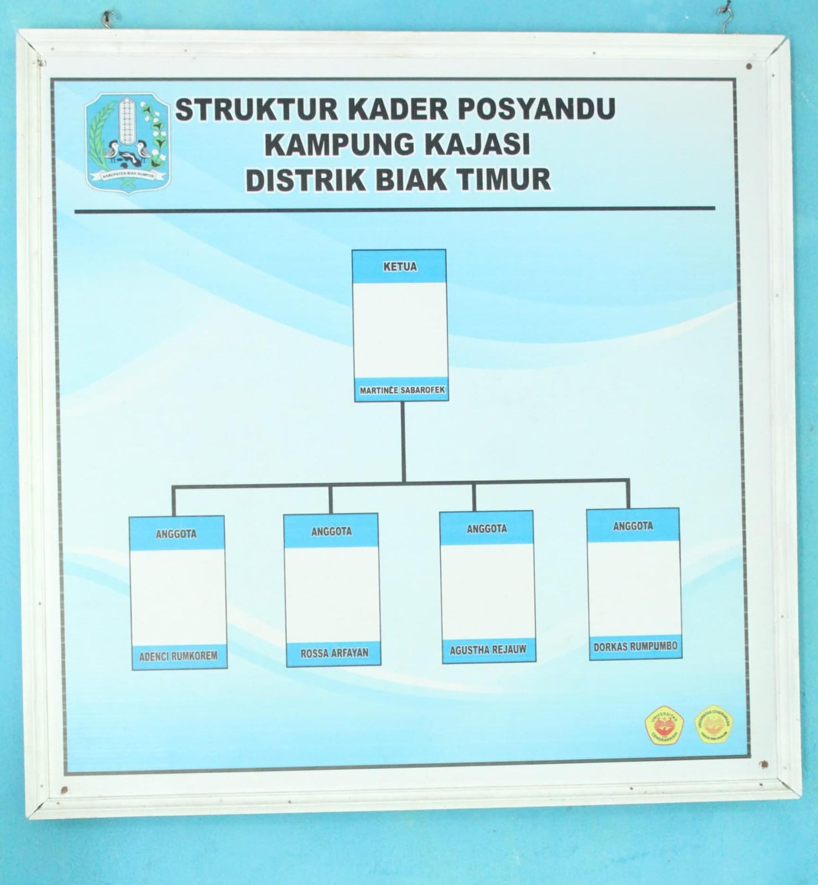
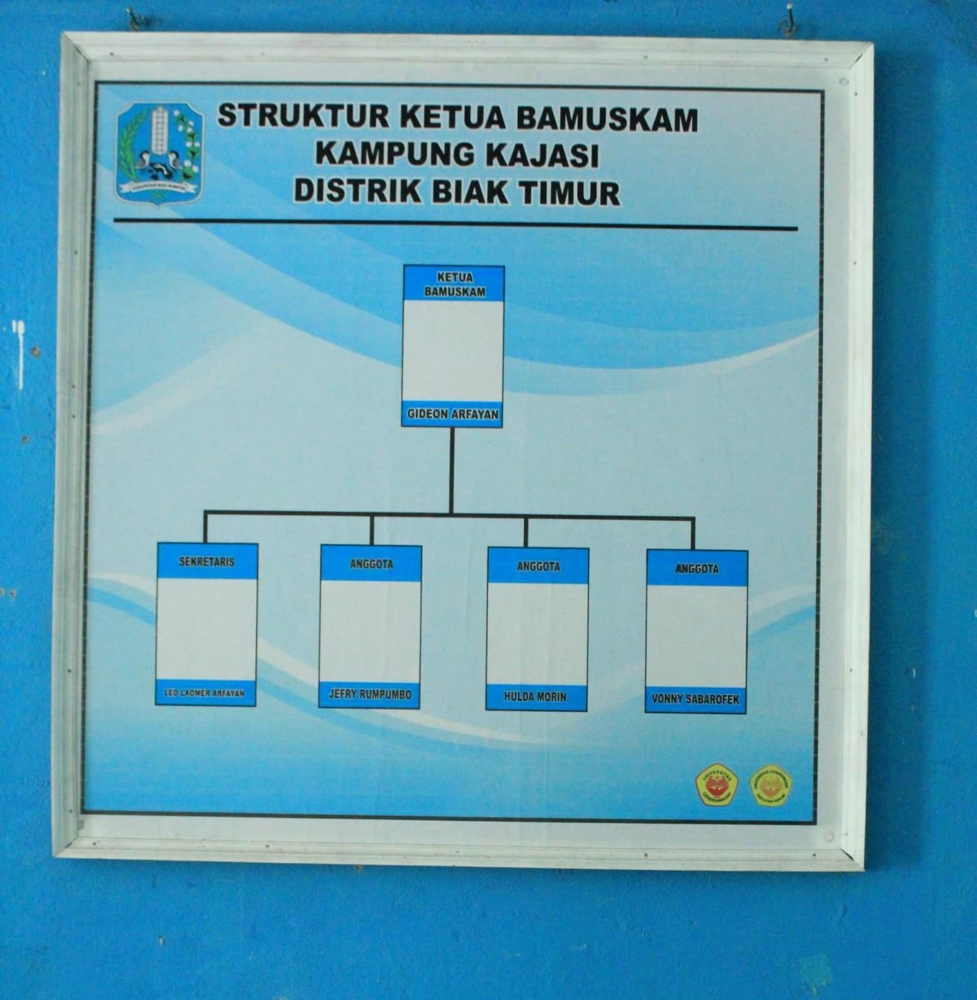

Struktur Organisasi Kampung Kajasi
Kampung Kajasi dipimpin oleh seorang Kepala Kampung yang dibantu oleh berbagai perangkat kampung, seperti Sekretaris Kampung, Kepala Urusan, Kepala Seksi, serta lembaga masyarakat seperti Bamuskam (Badan Musyawarah Kampung).
Struktur ini bertujuan untuk menciptakan sistem pemerintahan kampung yang transparan, partisipatif, dan bertanggung jawab dalam melayani masyarakat serta mendukung pembangunan kampung secara berkelanjutan.

Bagan Struktur Kampung

Ketua PKK

Posyandu

Bamuskam